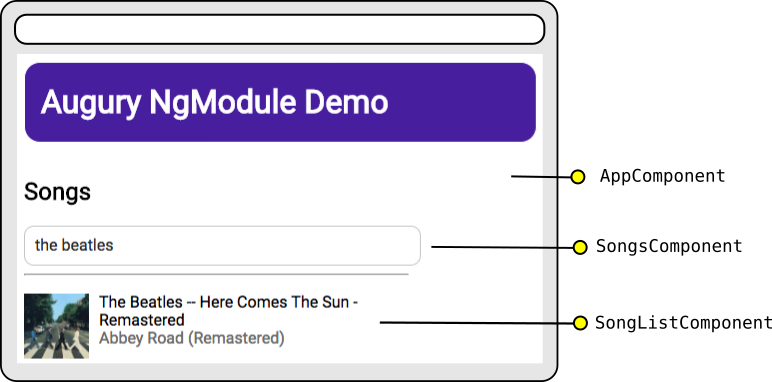
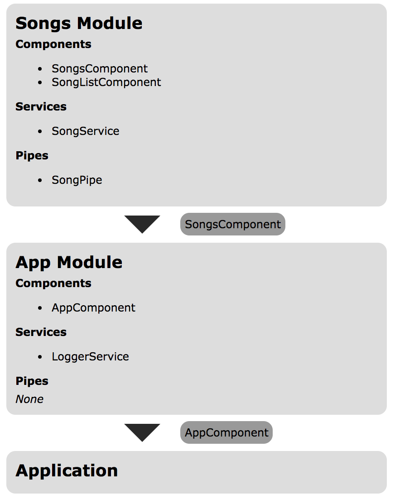
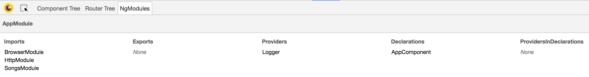
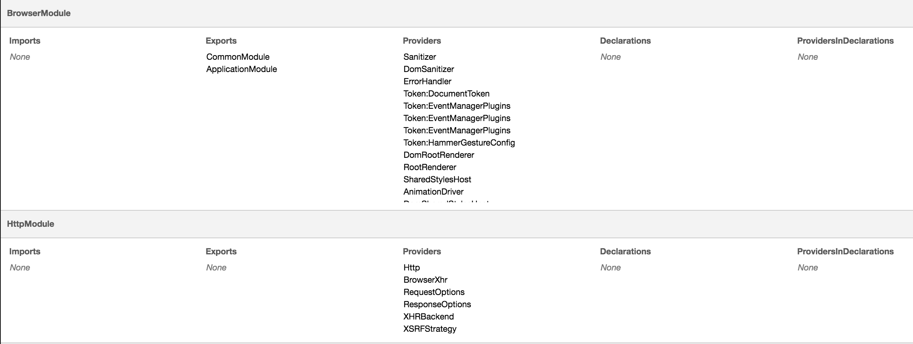
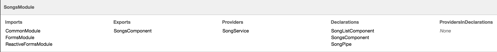
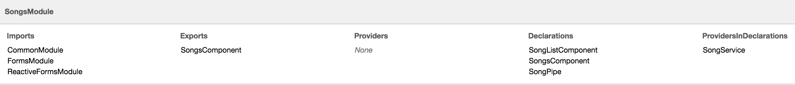

Description
We will use a simple Angular application, Song List to examine how to use Augury's module list feature. The application includes a simple form for the user to search for songs and will use the public Spotify API to get the results and display the album art and song title in a list.
Architecture
The Song List application is composed of two modules. One, the root application module which is used to bootstrap and launch the application. The second is a single feature module that contains the components, services, and pipes relevant for the searching and displaying of song data. Lets take a look at how this is organized:

The Songs Module is a feature module, which exports a component, SongsComponent that can be used throughtout the application. This is used in the AppComponent, which is our root component that will bootstrap the application.
The architecture of the Song Module is pretty straightforward. The SongsComponent contains the search field in its template, and has the SongService injected as a dependency. When the user searches for a term, the SongService is invoked to perform a GET request, which returns an array of results. This dataset is passed to the SongListComponent which will use the SongPipe to display the album art, song title, and the name of the artist.
Now that we understand the basic architecture of the Song List application, lets open Augury and explore the Module List feature.
Opening Augury
To use Augury, lets open up DevTools with the following shortcut:
Ctrl + Shift + I (Cmd + Opt + I on Mac)
When the DevTools panel opens, select the Augury tab located on the far right. By default the Component Tree tab will be open. To the far right, there will be a tab labeled NgModules. This is the section we want so click on it to open it up!
Root Module

The Module List feature lists all the modules in the application. The first module in this list is the AppModule. Here we can see what imports, exports, providers, declarations, and providers in declarations are found in the module. Our AppModule imports the BrowserModule (used for bootstrapping), HttpModule (used for performing network requests) and our feature module, SongsModule. Since the AppModule contains the application's root component it doesn't need to export anything. The AppModule has a single Provider, LoggerService which is a simple service used for logging messages. Finally, the AppModule has one component, AppComponent which is the root component of our application and as such is the bootstrap entry point.
To see where Augury gets this information from, open up app.module.ts and take a look at the AppModule source code:
import { BrowserModule } from '@angular/platform-browser';
import { NgModule } from '@angular/core';
import { HttpModule } from '@angular/http';
import { AppComponent } from './app.component';
import { Logger } from './services/logger.service';
import { SongsModule } from './modules/songs.module';
@NgModule({
declarations: [
AppComponent
],
imports: [
BrowserModule,
HttpModule,
SongsModule
],
providers: [Logger],
bootstrap: [AppComponent]
})
export class AppModule { }
As you can see, the information that Augury has picked out and displayed in the Module List comes directly from the NgModule definition.
Declarations include the components, directives, and pipes used by the module.
Imports are the other modules and their exported declarations that we want to be made available in this module.
Providers list the services used by this module. Any service included as a provider in the NgModel definition becomes available to any other module in the hierarchical dependency injection system. For example, the SongsModule includes the SongService as a provider, since AppModule has imported the SongsModule it can now use the SongService. If we omitted the SongService from the NgModel definition of the SongsModel and instead opted to include the SongService in the provider definition of the SongsComponent, the AppModule will not have access to the SongService. Dependency Injection is a topic outside the scope of this guide, but you can read more about it on the Angular 2 Documentation
So now that we've taken a look at the root module of our application, let us continue on to the other modules in Augury's module list.
Library Modules
Angular comes with a bunch of essential modules that we use for creating forms, making HTTP requests, and specifying what environment our application should run under. In the root module we imported the BrowserModule and HttpModule.

Since library modules are static, there really isn't much in the way of useful information here, particularly for this application. However there may come a time where you need to debug a certain library module and given the complexity and size of such modules getting a breakdown of its providers, exports and declarations may come in handy.
Feature Module
Finally, lets take a look at our feature module, SongsModule.

As we can see, the SongsModule uses three library modules. FormsModule and ReactiveFormsModule are used for building the search form, and CommonModule contains many of the common directives used in the applications templates.
Feature modules can be thought of as extending the functionality of an application by introducing a new feature. Since this is a feature module, it will be imported by another module (in this case the root module). However not all declarations from the SongsModule need to be used elsewhere. The SongListComponent and SongPipe are really only used within the SongsModule, so we export our main container for this module, SongsComponent.
The SongsModule also uses the SongService as seen under the provider section.
Let us take a look at the definition of the Song Module, open up src/app/modules/songs.module.ts:
import {NgModule} from '@angular/core';
import {CommonModule} from '@angular/common';
import { FormsModule, ReactiveFormsModule } from '@angular/forms';
import {SongPipe} from '../pipes/song.pipe';
import {SongListComponent} from '../components/song-list/song-list.component';
import {SongsComponent} from '../components/songs/songs.component';
import {SongService} from '../services/songs.service';
@NgModule({
imports: [
CommonModule,
FormsModule,
ReactiveFormsModule
],
declarations: [
SongListComponent,
SongsComponent,
SongPipe
],
providers: [
SongService
],
exports: [
SongsComponent
]
})
export class SongsModule {}
Just like our root module, Augury has picked out the imports, declarations, providers and exports information from our module definition.
One important thing to take note of is that Module List does not include any resources (pipes, providers, directives, components, etc) that a module may use, just the resources defined by NgModule. For example, open up the SongListComponent (components/song-list/song-list.component.ts), here is what it should look like:
export class SongListComponent {
@Input() songs: any;
ngOnChanges() {
if (this.songs) {
this.logger.info('song list changed!');
}
}
constructor(private logger: Logger) {
}
}
The SongListComponent uses the Logger service via dependency injection that has been made available from the AppModule. Since the AppModule is at the root of the application's dependency injection hierarchy, the SongListComponent can use any of its providers. However, since the Logger service is defined in the AppModule, Augury will list this service under the providers section of the AppModule. It is not included in the section of the SongsModule, even though the SongsModule uses this service. To get a better sense of dependency injection throughout our application we should use Augury's Dependency Injection Tree.
Let us see what happens when we remove the SongService from the provider list in the SongModule definition and move it to the provider list in the SongsComponent component definition. Here is what SongsComponent will look like:
@Component({
selector: 'my-songs',
styleUrls: ['./songs.component.css'],
providers: [SongService],
template: `
<h2>Songs</h2>
<form [formGroup]="searchForm">
<input
#searchInput
class="search"
formControlName="artist"
debounce="400"
placeholder="Search for artist"
(keyup)="search()" />
</form>
<hr />
<song-list [songs]="songs"></song-list>
`
})
export class SongsComponent { ...
Augury has picked up what we've done and has noticed that the SongService is no longer a provider from the module level, but instead from the component level. As we can see below, SongService is now under the ProvidersInDeclarations section.

This comes in handy as Auguary is able to pick up and list all services that a module provides, whether or not they are included in the module providers, or via specific component providers.